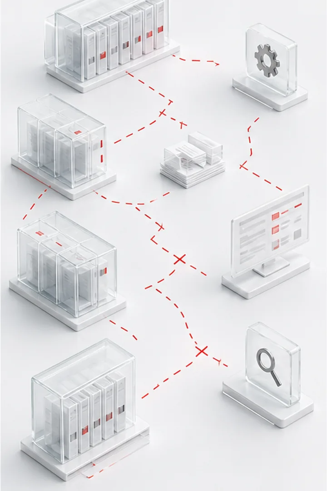
01
当前问题
场景不清、知识分散，应用成效难评估
单点工具无法稳定进入组织流程，也难以形成长期可复用能力。
以大模型与智能体技术为核心，推动业务流程智能化、组织知识资产化和决策科学化。

先识别流程中的真实机会，再连接知识、规则、工具与权限，避免 AI 应用停留在演示阶段。

单点工具无法稳定进入组织流程，也难以形成长期可复用能力。
建设统一平台并提供咨询、开发、培训和持续运营服务。
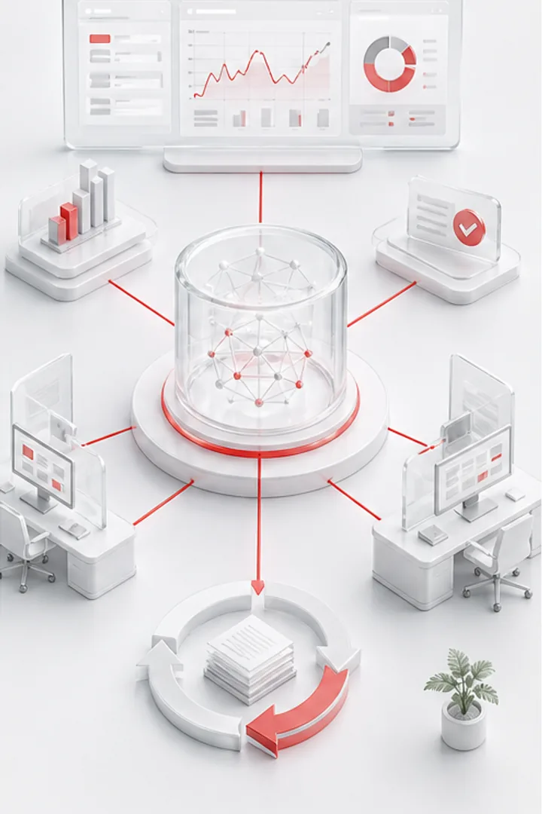
知识能够复用，流程得到提效，用户采用和业务结果可以持续评估。
从场景规划到开发、集成和运营，确保智能体能够真正进入工作流程。
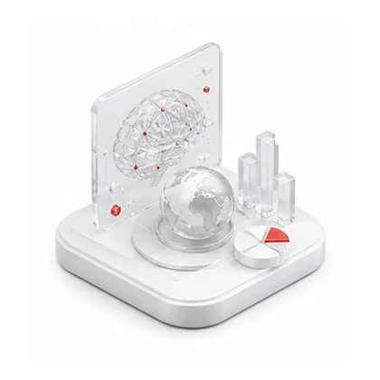
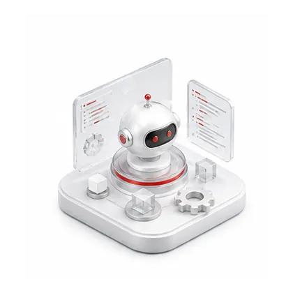
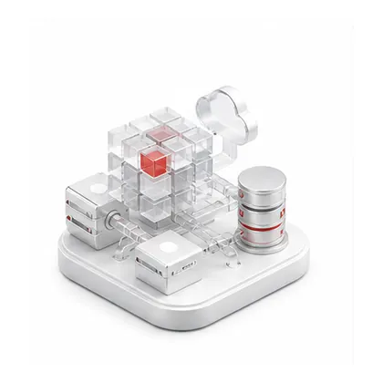
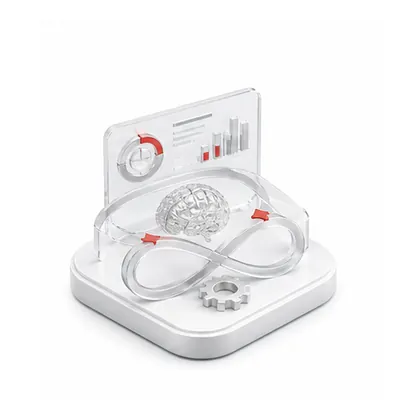
知识、智能体、应用编排和模型能力统一管理，并提供安全治理与开放集成。
应用场景根据组织流程和知识基础选择，不以工具清单替代需求分析。
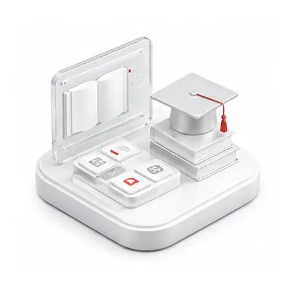
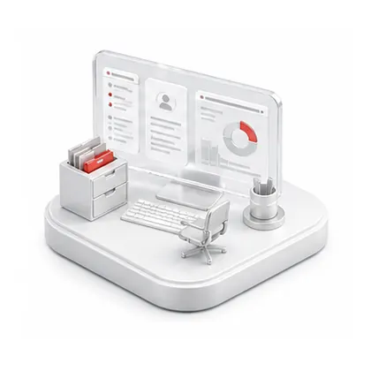
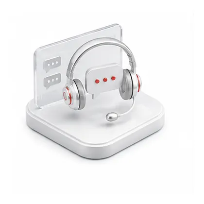
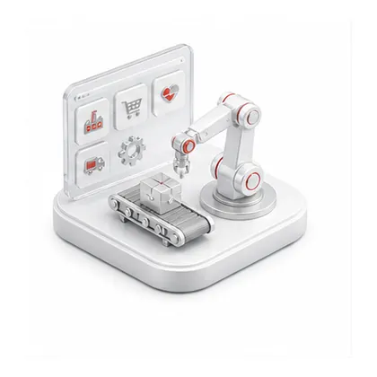
每个阶段都产出可检查的结果，持续根据用户反馈和效果指标迭代。
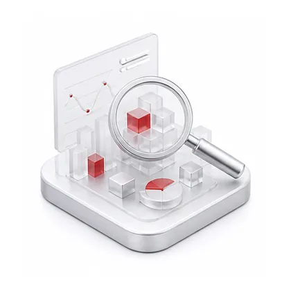
调研需求与流程，识别 AI 应用机会。
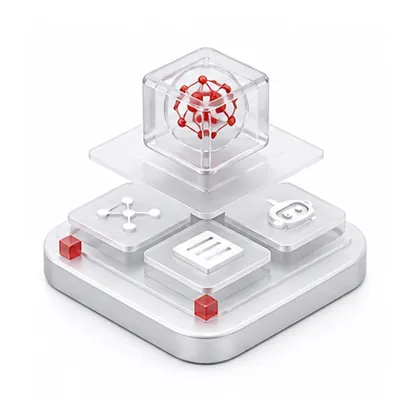
完成场景、智能体、知识库与实施规划。
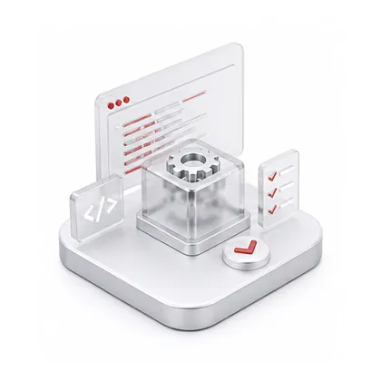
构建知识库和智能体，完成集成与测试。
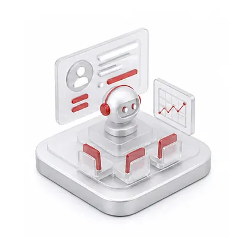
开展用户培训、试点应用与反馈优化。
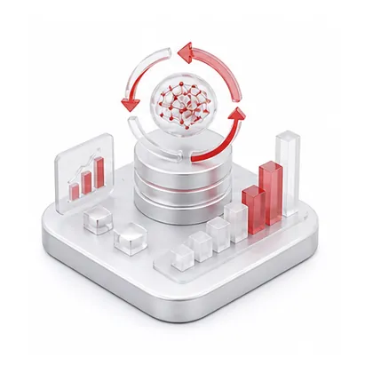
评估效果，更新知识并扩展应用能力。
不只检查功能是否上线，还要持续衡量效率、成本、采用体验和业务结果。
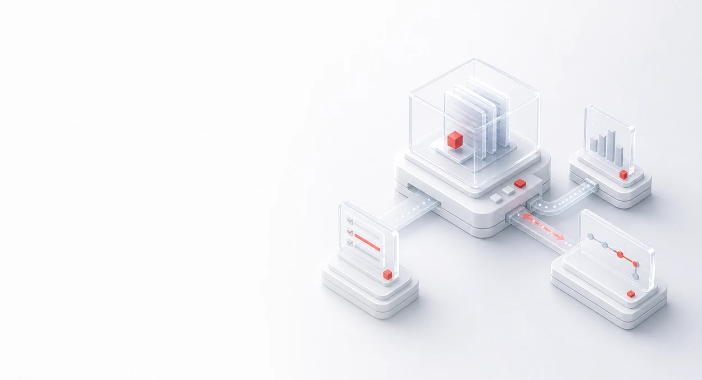
衡量重复劳动减少、任务耗时变化和流程周转效率。
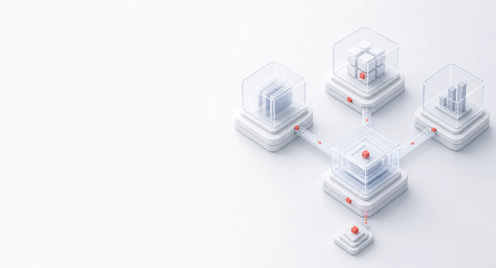
分析资源配置、人工投入、重复建设与运营成本变化。
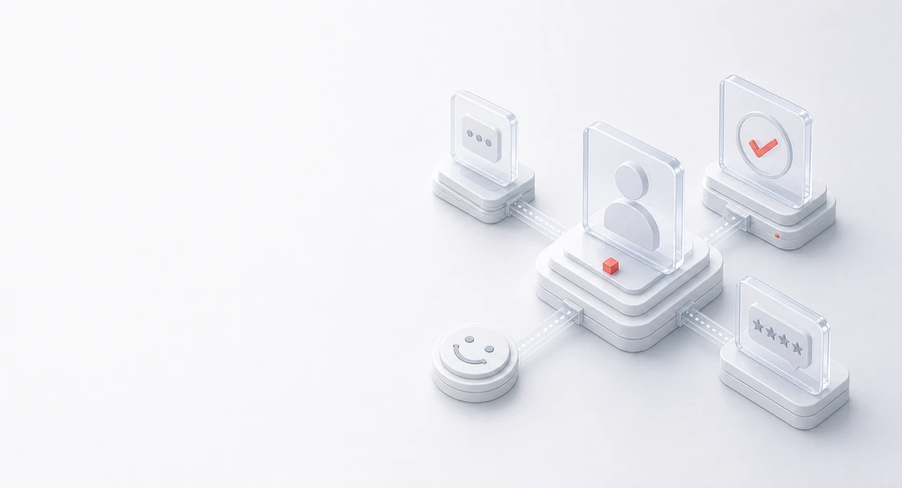
跟踪使用率、任务完成质量、反馈和持续采用情况。
评估服务能力、知识复用、创新产出和业务改善结果。
先判断优先场景，再完成知识库、智能体编排与系统集成，形成可运行、可衡量的业务应用。
 项目定制开发
项目定制开发 平台订阅服务
平台订阅服务 联合运营共建
联合运营共建 生态合作
生态合作